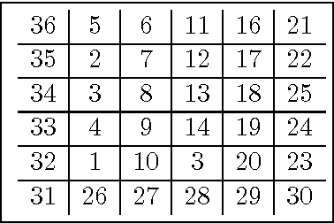

Prime Grid Labeling
A program that labels an n x m grid with the integers 1 through nm so every neighboring pair is coprime, with a direct mapping to prime graph labeling.
About the project
This project was developed by a team of six Dakota State University undergraduate students. It explores how graph-labeling constraints can be represented and solved in a rectangular matrix.
A professor introduced the idea of graph labeling in the context of a matrix after a research presentation. I saw an opportunity to explore graph algorithms, contribute to prime-labeling research, and work closely with other motivated students.
Work completed
- Built custom Python modules using object-oriented design.
- Applied graph structure, number theory, and algorithmic reasoning.
- Collaborated with five other students across concurrent versions using Git.
- Translated mathematical theory into executable constraints.
Set START_N and END_N to the lower and upper grid bounds, then run
runner.py. Generated matrices are written to the grids directory. The repository
README contains the complete operating instructions.
